Рассматривали конструкцию универсального компенсатора погрешностей направления ползуна (рис. 3.7), основой которого служит составной предварительно напряженный упругий элемент, выполненный в виде двух жестких, например, круглых, пластин из полиуретана с отверстиями, причем одна из пластин имеет возможность перемещаться поворотом относительно другой. Это позволяет менять площадь опорной поверхности и приводит к изменению жесткости компенсатора, которая вычисляется по формуле (1.1). Коэффициент перекрытия определяли в соответствии с формулой (2.18).
Варьирование коэффициентом перекрытия осуществляется при повороте верхней пластины, в результате чего достигается расширение диапазона технологических операций [202–204]. Схема перекрытия отверстий двух поворотных пластин универсального компенсатора погрешностей направления ползуна представлена на рис. 3.8 [202–204]. При этом задачу рассматривали для случая, когда радиусы отверстий верхней и нижней пластин могут не совпадать. Согласно принятой схеме расстояние между центрами отверстий пластин компенсатора рассчитывали по теореме косинусов:
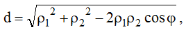
где p1 – расстояние от оси вращения до центра меньшего отверстия;
p2– расстояние от оси вращения до центра большего отверстия;
φ – угол между лучами, идущими из общего начала в центры отверстий.
1 – отверстия в пластинах компенсатора;
2 – прорези под фиксирующий зуб хвостовика;
3, 4 – верхняя и нижняя пластины компенсатора;
h1 и h2 – толщины верхней и нижней упругих пластин;
b – расстояния между отверстиями и внутренними и внешними стенками компенсатора;
А-А – обозначение разреза
p1 – расстояние от оси вращения до центра отверстия верхней пластины;
p2 – расстояние от оси вращения до центра отверстия нижней пластины;
φ – угол между лучами, идущими из общего начала в центры отверстий пластин;
r1 – радиус меньшего отверстия пластины;
r2 – радиус большего отверстия платины
При этом:
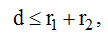
где r1 – радиус меньшего отверстия пластины;
r2– радиус большего отверстия платины.
Вводили относительные величины ω, ω1 и ω2:
Также вводили углы α и β, обозначенные на рис. 3.8. Тогда:
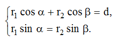Принимая Α, решали систему уравнений (3.29) и находили решение в виде неявно заданной функции :
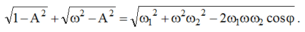Если выполняется неравенство:
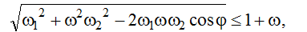то имеем:
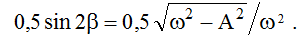Площадь перекрытия двух отверстий вычисляли как сумму площадей сегментов DB1O1, O1B1E, DB2O1, O1B2E, причем
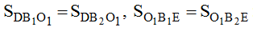 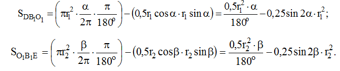Коэффициент перекрытия по отношению к меньшему отверстию пластины компенсатора, площадь которой S1 = Π * r12 , рассчитывали следующим образом:
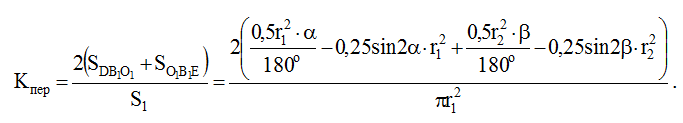Используя введенные условные обозначения, получили окончательную формулу (3.37) для расчета коэффициента перекрытия по отношению к меньшему отверстию упругой пластины универсального компенсатора [202–204]:
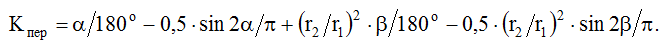 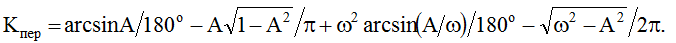